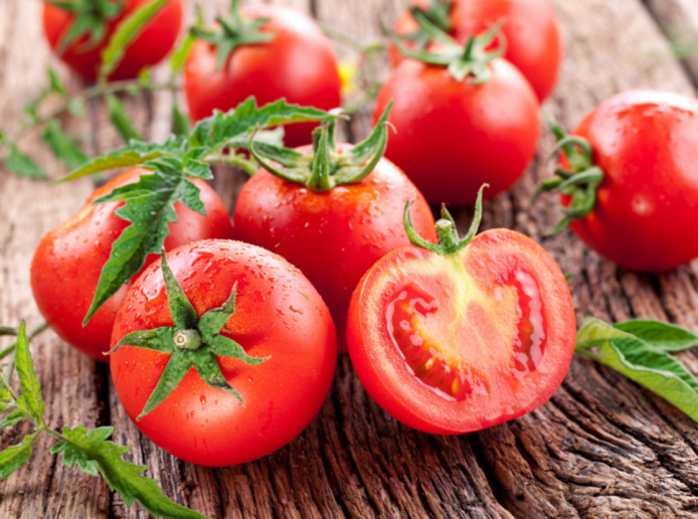

<ion-header>
  <ion-toolbar>
      <ion-back-button defaultHref="/tabs/tab2"></ion-back-button>
    <ion-title>Forecast</ion-title>
  </ion-toolbar>
</ion-header>

<ion-content>

    <div class="container">
        <div class="carrot">
          
        </div>
    </div>
  
    <h2 class="update"><strong>Warning:</strong> Tomato</h2>
    <div class="desc">Make sure the plant is shaded from the afternoon sun, as it tends to be hotter in the later hours.</div>
    <h2 class="tips"><strong>Tips:</strong></h2>
    <div class="desc">Add mulch to the plants and water to retain moisture in the plants roots. </div>

</ion-content>
